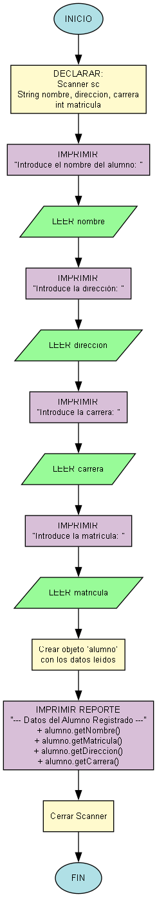

Creando tu Primera Clase: Alumno
En este ejercicio, crearás una "plantilla" (una clase) para representar a un Alumno. Luego, tu programa pedirá los datos de un alumno al usuario y los usará para crear un "objeto" Alumno.

Requisitos
El programa se divide en dos partes: la **clase** y el **método `main`**.
Parte 1: La Clase `P14_7_ej_5_1`
- Debe tener atributos privados:
nombre,direccion,carrera(String) ymatricula(int). - Debe tener un **constructor** que reciba y asigne todos estos atributos.
- Debe tener métodos `get` y `set` para cada uno de los atributos.
Parte 2: El Método `main`
- Pide al usuario los datos de un alumno (nombre, dirección, carrera y matrícula).
- Crea un nuevo objeto de la clase `P14_7_ej_5_1` usando los datos introducidos.
- Imprime un reporte final con los datos del objeto creado.
Ejemplo de uso esperado
Introduce el nombre del alumno: Juan Perez
Introduce la dirección: Avenida Siempre Viva 742
Introduce la carrera: Sistemas Computacionales
Introduce la matrícula: 123456
--- Datos del Alumno Registrado ---
Nombre: Juan Perez
Matrícula: 123456
Dirección: Avenida Siempre Viva 742
Carrera: Sistemas Computacionales